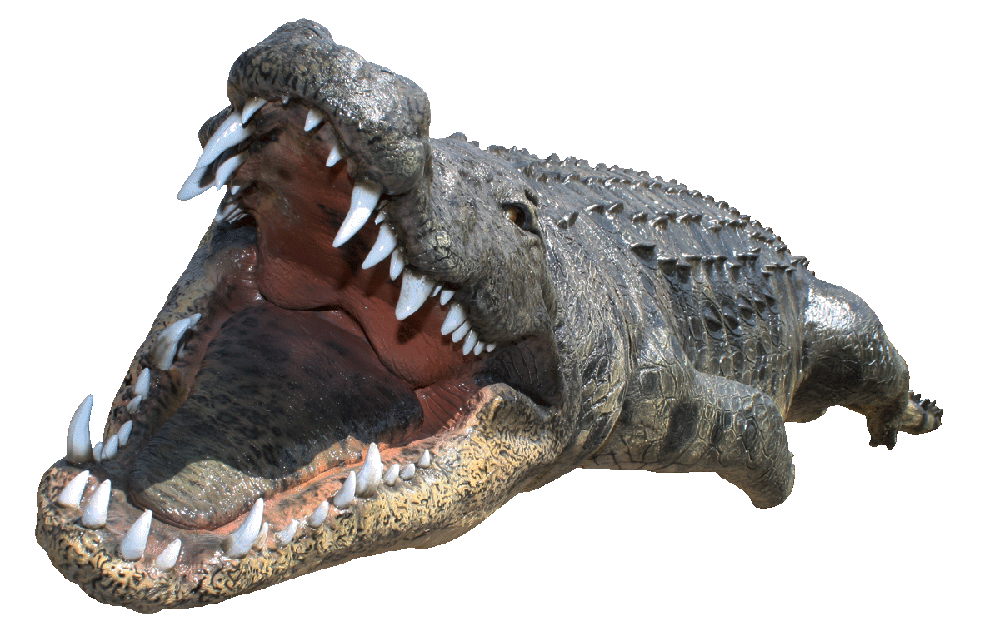

Bottlenose Dolphin

- Endandred Status:Common
- Environment:Aquatic
- Family:Delphinidae
- Lifespan:40-60 year lifespan
Bottlenose dolphins are known to use pufferfish toxin as a drug.
Bottlenose dolphins are known to use pufferfish toxin as a drug.

Tigers often hold grudges for years on other tigers and occasionally humans

The Peregrine Falcon's dive speed reaches up to 240 MPH.

Crocodiles are known to be the most powerful jaws in the animal kingdom.